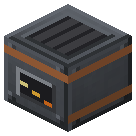

Электролизная ванна


Глинозём + кокс → алюминий; 8 пыли меди/никеля + купорос/сера → 8 слитков + шлам; 8 заготовок → 8 графита; 4000 воды → 25 mB тяжёлой воды. EU, HV.
Электролизная ванна на EU (до 512 EU/т, HV). Алюминий: 2 глинозёма + 1 кокс (анод сгорает) → слиток за 50 000 EU. Рафинирование: 8 пыли меди + медный купорос или 8 пыли никеля + сера → 8 слитков за 8 000 EU. Анодный шлам — в отдельный выход: медь 40 %, никель 60 % партии (доли копятся, без случайности) — из шлама платина (precious.zs). Графитация (Ачесон, B6): 8 угольных заготовок (3 нефтекокса + битум в верстаке → 3) → 8 графита за 80 000 EU. Тяжёлая вода (Веморк, B6): слот сырья пуст, в баке ≥ 4000 воды → 25 mB тяжёлой воды за 10 000 EU; воду — трубой, тяжёлую воду забирать трубой.
Параметры
| Эпоха | 3 — Электричество |
|---|---|
| Многоблок | нет |
| Привод | топка / своё |
| Баки, mB | 16000, 1000 |
| что делает | глинозём + кокс (анод) -> алюминий; рафинирование: 8 пыли меди/никеля + купорос/сера -> 8 слитков + анодный шлам 40/60 %; графит 8 заготовок -> 8 (10 000 EU/шт.); 4000 воды -> 25 mB тяжёлой воды |
| энергия на входе | EU 50 000/слиток Al, 8 000/партию рафинирования, до HV, ≤512 EU/т |
| из чего | HV-трансформатор IC2, плотная медь, бетон RC, котёл, стальные листы |
Кто кормит
- Railcraft:fuel.coke ← Коксовая камера
- dustCopper ← Химический реактор, Реактор высокого давления
- dustSulfur ← Химический реактор, Реактор высокого давления
- Глинозём (оксид алюминия) ← Химический реактор, Реактор высокого давления
- water ← Артезианская скважина
Кого кормит
- машины Zavod её продукт не едят
Как устроено (из кода)
Электролизная ванна. Главное - электролизёр Холла-Эру (1886): глинозём, растворённый в расплаве, разлагается током; алюминий собирается на дне ванны, кислород уходит на угольный анод и сжигает его (CO2 в трубу). Ток огромный - алюминий дорогой, как в жизни: весь EU АЭС наконец есть куда деть. Печь не нужна - ванну греет сам ток. Партия: ALUMINA глинозёма + 1 кокс (анод) -> 1 слиток алюминия, energyPerIngot EU (IC2, до HV, MAX_IN EU/т). Электролитическое рафинирование (Элкингтон, 1869; B1 чат 3 - было в индукционной плавильне TE): REFINE пыли + 1 подпитка электролита -> REFINE слитков, REFINE_EU на слиток; анодный шлам (платиноиды, precious.zs) - SLIME_CU / SLIME_NI % на партию, без случайности (накопитель долей в NBT). Медь - медный купорос, никель - сера (сульфатный электролит). Графитация (Ачесон, 1896; B6): GRAPHITE угольных заготовок (нефтекокс + битум) -> столько же графита, graphiteEu на штуку; ванна - печь сопротивления, второй слот не нужен. Графит - замедлитель кладки реактора и нейтронные отражатели (nuclear.zs). Тяжёлая вода (Веморк, Norsk Hydro 1934; B6): слот сырья пуст, в баке >= HW_WATER воды -> HW_OUT mB тяжёлой воды, heavyWaterEu на партию (каскад электролиза, водород и кислород - в воздух). Бак 0 - вода, бак 1 - тяжёлая вода (выход). Слоты: 0 сырьё (глинозём / пыль меди / пыль никеля / угольная заготовка), 1 анод или электролит, 2 выход, 3 анодный шлам (выход).